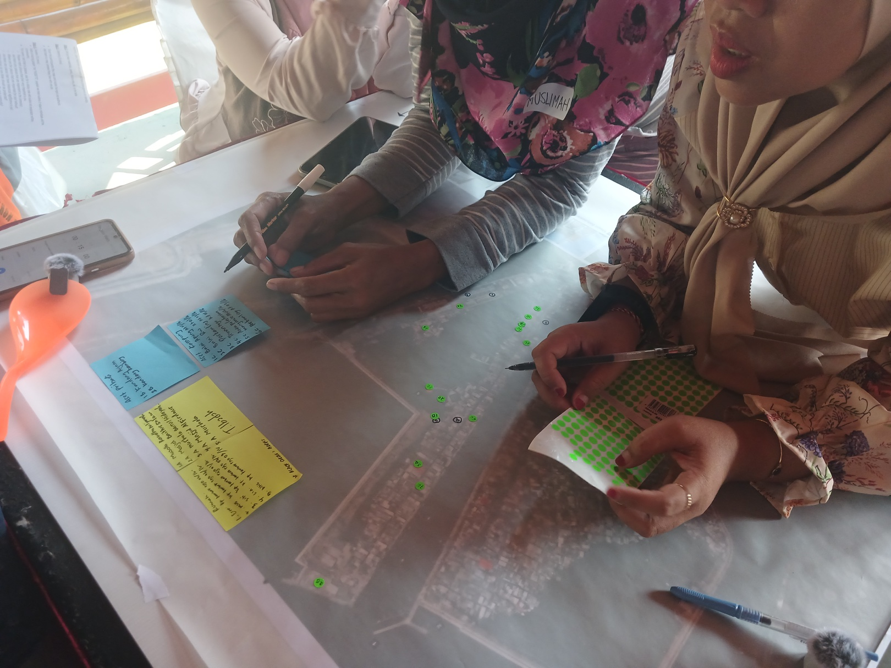
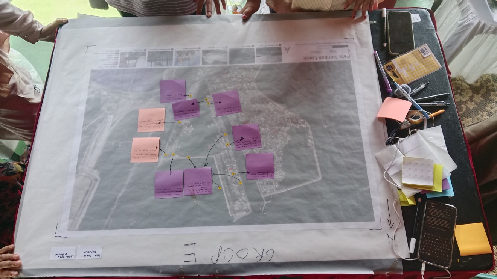
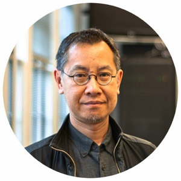
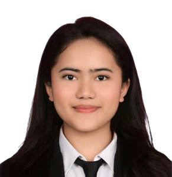

AI untuk Masa Depan Iklim yang Berkeadilan
Bagaimana kecerdasan buatan (AI) bisa mendukung upaya warga beradaptasi dengan perubahan iklim?
Lihat kegiatan lokakarya
Tentang proyek
Catatan resmi tidak selalu mencakup perubahan lingkungan yang diamati warga dan cara mereka beradaptasi. Proyek AI for Just Climate Futures mengkaji bagaimana pengetahuan warga, bersama data pemerintah dan sektor swasta, dapat membantu merancang alat berbasis AI untuk adaptasi iklim.
Penelitian ini mencakup Semarang, Indonesia, dan Kota Ho Chi Minh, Vietnam. Di Semarang, penelitian berfokus pada komunitas nelayan yang menghadapi kenaikan muka air laut dan banjir, yang berdampak pada rumah dan mata pencaharian mereka.
Baca ringkasan penelitian (bahasa Inggris)Lokakarya Pengetahuan Warga
Lokakarya ini membahas bagaimana banjir rob, penurunan muka tanah, dan hilangnya daratan pesisir memengaruhi kehidupan sehari-hari di Tambak Lorok, serta cara warga beradaptasi. Rangkaian kegiatan mencakup diskusi kelompok, wawancara sambil berjalan, serta sesi pemetaan dan penyusunan linimasa.
Buka peta dan linimasaAntarmuka peta berbahasa Inggris.
- Peta komunitas
- Peserta menandai tempat yang berkaitan dengan pembangunan, aset komunitas, dan risiko setempat.
- Linimasa sejarah lingkungan
- Peserta mencatat peristiwa yang mereka ingat, perubahan yang mereka alami saat ini, dan harapan untuk masa depan.
Tim menyusun bahan lokakarya dari September hingga November.
Rencana lokakarya Januari
Warga dan anak muda setempat akan mencoba tiga kegiatan dengan prototipe ponsel.
-
Jalan kaki dan cerita warga
Warga memilih tempat untuk berhenti dan bercerita. Anak muda menandai tempat itu pada peta dan memeriksa kembali catatannya bersama warga.
-
Dua rute, satu tujuan
Kelompok merekam dua rute dengan Strava, lalu menggunakan jejak GPX dan foto untuk membahas alasan warga memilih tiap rute.
-
Meninjau peta bersama
Warga melihat kembali tempat yang mereka kenal pada peta, lalu mengusulkan koreksi atau menambahkan cerita.
Catatan uji coba tersimpan di peramban ini.
Foto lokakarya
Dokumentasi lokakarya di Tambak Lorok · September 2026


Tim proyek
Civic Resilience Lab
-
Chaewon Ahn Direktur
-

Jeff Hou Direktur
-

Febriani Valentina Br Sihombing Asisten peneliti -
Kyuri Lee Asisten peneliti
-
Sallomita Febrina Asisten peneliti
-
 Shangen Chi Asisten peneliti
Shangen Chi Asisten peneliti -
Shreya Murali Asisten peneliti
-
 Vincent Gavriel Julijanto Asisten peneliti
Vincent Gavriel Julijanto Asisten peneliti -
Yuezhi Wang Asisten peneliti
Mitra penelitian
- Lulut Indrianingrum
 Catharina Dwi Astuti Depari
Catharina Dwi Astuti Depari